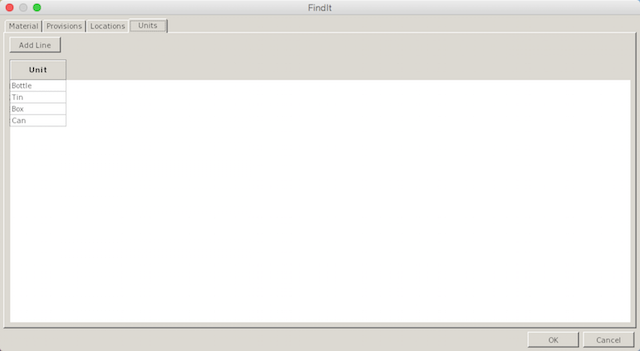
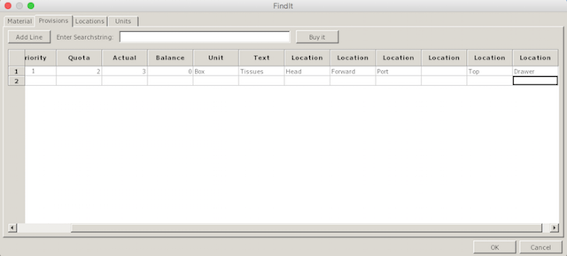
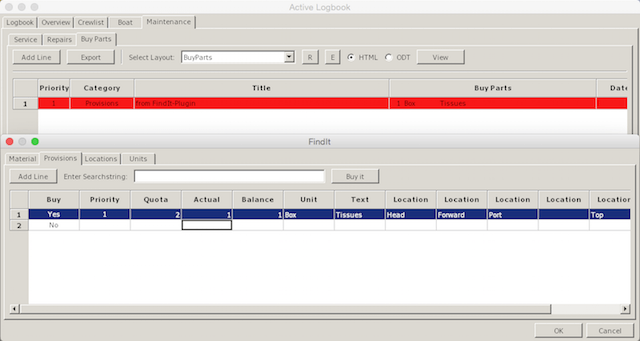

First you have to define the Units, e.g. Bottle, Can, Tin, Box etc.

Then you have to create the possible locations in the boat. These Locations are user definable and depend on the possible locations on board. The locations below are just for demo purposes.

Now you can create Material or Provisions with the units and locations defined previously.

If the Actual count will be below the Quota, the Balance will be positive and the Buy indicator will be set to Yes. Clicking on the Buy it button will transfer the Yes marked lines to the LogbookKonni plugin in the Maintenance/BuyParts section. Depending on the Priority it will be marked in different colors.
